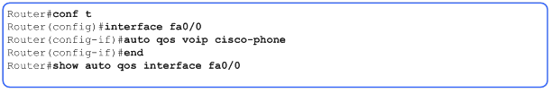

Network Optimization
I realise this is a long page! It's really a collection of notes I call my Network Engineering Toolkit that I like to come back to again and again. Please digest at your own pace.
A Router can be configured to permit or deny routing table updates to other Routers in a couple of ways, such as passive interface for example, which is used to block updates going out an interface only. However, if you want to block routing updates coming into the Router as well as going out then distribution lists are the answer. Unlike passive interface which blocks all updates leaving a router, if configured correctly, you can filter your routing information, and block specific networks from the routing table.
This gives you greater control over your network especially where bandwidth is limited, or processing power is low. Remember that Routers can potentially maintain quite large routing tables, however, processing power is critical in any network. So to help block or allow certain routing updates we can use distribution lists and we can implement route-maps discussed later where we use what is known as policy routing.Congestion
Network congestion can be minimised and controlled to a certain extent by causing a Router to avoid a particular path and use a more optimum path. Think of diversions in traffic to move motorists away from a blocked road for example, and you have the idea. The intention is to keep traffic moving whilst making use of the best route. Later we will cover very briefly the concept of QoS (Quality of Service) another method we can employ to improve network congestion.Here's a breakdown of what's covered on this page
- Access Control Lists
- Standard ACLs
- Distribution Lists
- Inbound Filtering
- OSPF Filtering: Inter-area verses intra-area
- OSPF Intra-Area Filtering
- Configure Route Maps
- Policing and shaping introduction
- Cisco Auto QoS
- Site to Site VPN
- Routing
- OSPF Troubleshooting
Access Control Lists (ACLs)
A Cisco instructor I admire once said to a class I attended, "What does an Access List do?", to which various students replied with detailed descriptions of ports and deny or permit kung fu of every kind.
Frank replied, "No! an Access List does absolutely nothing!!!, until you apply it to an interface!"
So true Frank, so an Access Control List is a configuration script that controls whether a Router permits or denies packets based on criteria found in the incoming or outgoing packet header. It uses rules in this list to match traffic types in a logical sequence. This allows the Router to specifically exclude or allow information through the network. By default ACLs are not enabled on the Router.
To make an ACL work, the Router extracts the information from each packet received in the header. The information extracted is:- Source IP Address
- Destination IP address
- Message type (Only for Ext ACL)
- Source Port (Only for Ext ACL)
- Destination (Only for Ext ACL)
There is an implied statement which is that any entry that does not match the list is denied access through the Router. The Router then drops the information/packet
Standard ACLs
Any traffic that matched this address range would be allowed through to any destination.Standard Numbered
Or on the other hand, to deny that network use the following.
Standard Named:
And to deny that network use the following.
Numbered Assignment
Named Assignment

Extended Numbered
Or on the other hand, to deny that network use the following
Extended Named
And to deny
Numbered Assignment
Extended Assignment
Distribution Lists
Normal Interface Distribution Lists
Use the distribute-list command in conjunction with an access list to pick and choose which routing updates a Router will send or receive. By referencing an access list, the distribute-list creates an effective route filter. The access list is a set of rules that precisely controls what routes a Router will be allowed to send or receive in a routing update. The distribute-list command is available for all IP routing protocols and can be applied to either inbound or outbound routing updates. The syntax for configuring a route filter is as follows:
Router(config)# distribute-list in | out [interface-name]
So what's the difference in terms of configuration between global and interface?
GLOBAL
Router(config)# Router eigrp 10
- starts the EIGRP routing process for autonomous system 10.
Router(config-Router)# distribute-list 1 in
- creates an incoming global distribute list that refers to access control list (ACL) 1.
Router(config-Router)# distribute-list 2 out
- creates an outgoing global distribute list that refers to ACL 2
INTERFACE
Router(config-Router)# distribute-list 3 in FastEthernet0/0
- creates an incoming interface distribute list that refers to FastEthernet0/0 and to(ACL) 3.
Router(config-Router)# distribute-list 4 out Serial0/0/0
- creates an incoming interface distribute list that refers to interface s0/0/0 and list (ACL) 4.
FILTER from OSPF into EIGRP
Router(config-Router)# distribute-list 5 out ospf 1
- Filters updates advertised from OSPF process ID 1 into EIGRP AS 10 according to ACL 5
Inbound Filtering
The way the Router behaves regarding inbound processing can be understood as follows:- The Router extracts the routing update
- The Router checks if there is a distribution list configured for the interface
- If so the Router will apply the ACL rule against the networks in the update
- If not, the Router will check for a global distriubtion list
- If one is present, the Router will apply the ACL rule accordingly against the networks in the update
Outbound Filtering
The way the Router behaves regarding outbound processing can be understood as follows: (looks the same, but step 1 is different)
- The Router prepares the routing update
- The Router checks if there is a distribution list configured for the interface
- If so the Router will apply the ACL rule accordingly against the networks in the update
- If not the Router will check for a global distribution list
- If so the Router it will apply the ACL rule accordingly against the networks in the update
Distribution lists impact with OSPF
An exception to the rule is OSPF (Open Shortest Path First). This is a link-state routing protocol and is unable to use distribute-lists on individual interfaces, and may only use global distribute-lists.The OSPF Inbound Filtering Using Route Maps with a Distribute List feature allows users to define a route map to prevent OSPF routes from being added to the routing table. In the route map, the user can match on any attribute of the OSPF route.
That is, the route map could be based on the following match options:
- match interface
- match ip address
- match ip next-hop
- match ip route-source
- match metric
- match route-type
- match tag
This feature can be useful during redistribution if the user tags prefixes when they get redistributed on ASBRs (Autonomous System Boundary Routers) and later uses the tag to filter the prefixes from being installed in the routing table on other Routers.
Filtering Based on Route Tag
Users can assign tags to external routes when they are redistributed to OSPF. Then the user can deny or permit those routes in the OSPF domain by identifying that tag in the route-map and distribute-list in commands.Filtering Based on Route Type
In OSPF, the external routes could be Type 1 or Type 2. Users can create route maps to match either Type 1 or Type 2 and then use the distribute-list in command to filter certain prefixes. Also, route maps can identify internal routes (interarea and intra-area) and then those routes can be filtered.Filtering Based on Route Source
When a match is made on the route source, the route source represents the OSPF Router ID of the LSA (Link State Advertisement) originator of the LSA in which the prefix is advertised.Filtering Based on Interface When a match is done on the interface, the interface represents the outgoing interface for the route that OSPF is trying to install in the routing table.
OSPF Filtering: Inter-area verses intra-area
There are two points at which OSPF routes can be filtered:- Within an Area
- Between an Area
The following topology will be used to explain each case.
OSPF Inter-Area Filtering
The 192.0.2.0/24 network has been implemented on R1 for testing. The route is intended only to be propagated throughout the local area, but is currently being advertised to the entire OSPF domain (as indicated by the green arrows in the topology):We can implement inter-area filtering (filtering between areas) on R3 to prevent the route from being advertised outside of area 10. First, we define a prefix list on R3 to deny the 192.0.2.0/24 prefix and allow all others:
Appending le 32 to the first prefix list entry ensures that any more-specific routes within 192.0.2.0/24 are denied as well (as opposed to only the exact /24 route)
Next we reference it as an area filter within OSPF configuration. The area filter-list statement below tells the Router to apply our prefix list to routes being distributed out of area 10. (Don't forget to re-establish neighbor adjacencies afterward so that the new policy takes effect.)
We can verify that R3 is still receiving the 192.0.2.0/24 route from R1, but is not distributing it out of the local area into the backbone (area 0):
And now look at R4
OSPF Intra-Area Filtering
Now assume that we need to move the filtering point closer toward the source of the route; specifically, we want to advertise 192.0.2.0/24 from R1 to R2, but not to R3. To accomplish this, we'll need to implement intra-area filtering using the distribute-list command under OSPF configuration.Intra-area filtering can reference an ACL, prefix list, or route-map; for simplicity's sake, we'll reuse the same prefix-list Deny_Test_Route that was implemented in the prior example. We'll implement inbound filtering on R3 for area 10 since we want to prevent R3 from receiving the route:
Again, don't forget to reset neighbor adjacencies after applying the change.
We can verify that R2 is still recieving the 192.0.2.0/24 route from R1 but R3 is not:
Note that distribute-lists do not work for outbound OSPF filtering (even though the CLI may accept the command) as OSPF is a link-state protocol and thus all Routers within an area must flood all LSAs. Although unidirectional LSA database filtering can be enabled with the database-filter parameter, it is not appropriate in this scenario (and is typically best avoided altogether).
Configure Route Maps
Revision – Access ListsRecall that ACLs permit or deny traffic based upon matches in a list. These statements are checked in sequential order one line at a time until a match is found. If no match is found it is important to remember that there is an implicit deny statement at the end. If you need to edit the ACL you must first remove the entire list, you cannot delete a statement or try to change the order of the statements without starting from scratch. That is why it is a good idea to prepare your ACLs in Notepad or some other Text Editor first and if you need to make any changes, you can prefix all the ACL statements with no in notepad to remove them, rewrite the modified ACL underneath and then copy and paste into the Router.
Route Maps
The route-map command is used to configure policy routing, which is often a complicated task. Although policy routing can be used to control traffic within an autonomous system (AS), it is typically used to control routing between autonomous systems. For that reason, policy routing is used extensively with exterior gateway protocols (EGPs), such as Border Gateway Protocol (BGP).Route maps operate similar to access lists, by examining one line at a time until a match is found. Route maps are different from numbered access lists because they can be modified without changing the entire list. Each route map statement is given a number. If a sequence number is not specified, the first route map condition will automatically be numbered as ten (10). The second condition will automatically be numbered as 20, and so on. The optional sequence number can be used to indicate the position that a new route map is to have in the list of route maps already configured with the same name.
After entering the route-map command, enter match and set commands in the route-map configuration mode. Each route-map command has a list of match and set commands associated with it. The match commands specify the match criteria. They are the conditions that should be tested to determine whether to take action. The set commands specify the set actions. They are the actions to be performed if the match criteria are met.
Router(config)# access-list 5 deny 10.1.1.0 0.0.0.255
Router(config)# access-list 5 permit any
Router(config)# route-map {permit|deny} [sequence_number]
Router(config-route-map)# match ip address
Router(config-route-map)# set ip next-hop
Router(config-route-map)# set interface alternate set method for P-P links
On the inbound interface apply the policy route-map.
Router(config-if)# ip policy route-map
Policing and shaping introduction
There are two methods to limit the amount of traffic originating from an interface: policing and shaping. When an interface is policed outbound, traffic exceeding the configured threshold is dropped (or remarked to a lower class of service). Shaping, on the other hand, buffers excess (burst) traffic to transmit during non-burst periods. Shaping has the potential to make more efficient use of bandwidth at the cost of additional overhead on the router.All this is just dandy, but doesn't mean much until you see its effects on real traffic. Consider the following lab topology:
We'll be using Iperf on the client (192.168.10.2) to generate TCP traffic to the server (192.168.20.2). In the middle is R1, a Cisco 3725. Its F0/1 interface will be configured for policing or shaping outbound to the server.
IPERF
iperfIperf is able to test the bandwidth available across a link by generating TCP or UDP streams and benchmarking the throughput of each. To illustrate the effects of policing and shaping, we'll configure Iperf to generate four TCP streams, which we can monitor individually. To get a feel for how Iperf works, let's do a dry run before applying any QoS policies. Below is the output from Iperf on the client end after running unrestricted across a 100 Mbit link:
Client$ iperf -c 192.168.20.2 -t 30 -P 4
------------------------------------------------------------
Client connecting to 192.168.20.2, TCP port 5001
TCP window size: 8.00 KByte (default)
------------------------------------------------------------
[1916] local 192.168.10.2 port 1908 connected with 192.168.20.2 port 5001
[1900] local 192.168.10.2 port 1909 connected with 192.168.20.2 port 5001
[1884] local 192.168.10.2 port 1910 connected with 192.168.20.2 port 5001
[1868] local 192.168.10.2 port 1911 connected with 192.168.20.2 port 5001
[ ID] Interval Transfer Bandwidth
[1900] 0.0-30.0 sec 84.6 MBytes 23.6 Mbits/sec
[1884] 0.0-30.0 sec 84.6 MBytes 23.6 Mbits/sec
[1868] 0.0-30.0 sec 84.6 MBytes 23.6 Mbits/sec
[1916] 0.0-30.0 sec 84.6 MBytes 23.6 Mbits/sec
[SUM] 0.0-30.0 sec 338 MBytes 94.5 Mbits/sec
iperf is run with several options:
- -c - Toggles client mode, with the IP address of the server to contact
- -t - The time to run, in seconds
- -P - The number of parallel connections to establish
We can see that iperf is able to effectively saturate the link at around 95 Mbps (94.5 to be precise), with each stream consuming a roughly equal share of the available bandwidth.
Policing
Our first test will measure the throughput from the client to the server when R1 has been configured to police traffic to 1 Mbit. To do this we'll need to create the appropriate QoS policy and apply it outbound to F0/1. Here's how it looks in the running config.policy-map Police
class class-default
police cir 1000000
!
interface FastEthernet0/1
service-policy output Police
We can then inspect our applied policy with show policy-map interface. F0/1 is being policed to 1 Mbit with a 31250 bytes burst:
R1# show policy-map interface FastEthernet0/1
Service-policy output: Police
Class-map: class-default (match-any)
2070 packets, 2998927 bytes
5 minute offered rate 83000 bps, drop rate 0 bps
Match: any
police:
cir 1000000 bps, bc 31250 bytes
conformed 1394 packets, 1992832 bytes; actions:
transmit
exceeded 673 packets, 1005594 bytes; actions:
drop
conformed 57000 bps, exceed 30000 bps
Repeating the same iperf test now yields very different results:
Client$ iperf -c 192.168.20.2 -t 30 -P 4
------------------------------------------------------------
Client connecting to 192.168.20.2, TCP port 5001
TCP window size: 8.00 KByte (default)
------------------------------------------------------------
[1916] local 192.168.10.2 port 1922 connected with 192.168.20.2 port 5001
[1900] local 192.168.10.2 port 1923 connected with 192.168.20.2 port 5001
[1884] local 192.168.10.2 port 1924 connected with 192.168.20.2 port 5001
[1868] local 192.168.10.2 port 1925 connected with 192.168.20.2 port 5001
[ ID] Interval Transfer Bandwidth
[1884] 0.0-30.2 sec 520 KBytes 141 Kbits/sec
[1916] 0.0-30.6 sec 1.13 MBytes 311 Kbits/sec
[1900] 0.0-30.5 sec 536 KBytes 144 Kbits/sec
[1868] 0.0-30.5 sec 920 KBytes 247 Kbits/sec
[SUM] 0.0-30.6 sec 3.06 MBytes 841 Kbits/sec
Notice that although we've allowed for up to 1 Mbps of traffic, Iperf has only achieved 841 Kbps. Also notice that, unlike our prior test, each flow does not receive an equal proportion of the available bandwidth. This is because policing (as configured) does not recognize individual flows; it merely drops packets whenever they threaten to exceed the configured threshold.
Using Wireshark's IO graphing feature on a capture obtained at the server, we can observe the apparently random nature of the flows. The black line measures the aggregate throughput, and the colored lines each represent an individual TCP flow.
Shaping
In contrast to policing, we'll see that shaping handles traffic in a very organized, predictable manner. First we'll need to configure a QoS policy on R1 to shape traffic to 1 Mbit. When applying the Shape policy outbound on F0/1, be sure to remove the Police policy first with no service-policy output Police.policy-map Shape
class class-default
shape average 1000000
!
interface FastEthernet0/1
service-policy output Shape
Immediately after starting our Iperf test a third time we can see that shaping is taking place:
R1# show policy-map interface FastEthernet0/1
Service-policy output: Shape
Class-map: class-default (match-any)
783 packets, 1050468 bytes
5 minute offered rate 0 bps, drop rate 0 bps
Match: any
Traffic Shaping
Target/Average Byte Sustain Excess Interval Increment
Rate Limit bits/int bits/int (ms) (bytes)
1000000/1000000 6250 25000 25000 25 3125
Adapt Queue Packets Bytes Packets Bytes Shaping
Active Depth Delayed Delayed Active
- 69 554 715690 491 708722 yes
This last test concludes with very consistent results:
Client$ iperf -c 192.168.20.2 -t 30 -P 4
------------------------------------------------------------
Client connecting to 192.168.20.2, TCP port 5001
TCP window size: 8.00 KByte (default)
------------------------------------------------------------
[1916] local 192.168.10.2 port 1931 connected with 192.168.20.2 port 5001
[1900] local 192.168.10.2 port 1932 connected with 192.168.20.2 port 5001
[1884] local 192.168.10.2 port 1933 connected with 192.168.20.2 port 5001
[1868] local 192.168.10.2 port 1934 connected with 192.168.20.2 port 5001
[ ID] Interval Transfer Bandwidth
[1916] 0.0-30.4 sec 896 KBytes 242 Kbits/sec
[1868] 0.0-30.5 sec 896 KBytes 241 Kbits/sec
[1884] 0.0-30.5 sec 896 KBytes 241 Kbits/sec
[1900] 0.0-30.5 sec 896 KBytes 241 Kbits/sec
[SUM] 0.0-30.5 sec 3.50 MBytes 962 Kbits/sec
With shaping applied, Iperf is able to squeeze 962 Kbps out of the 1 Mbps link, a 14% gain over policing. However, keep in mind that the gain measured here is incidental and very much subject to change under more real-world conditions. Also notice that each stream receives a fair share of bandwidth. This even distribution is best illustrated graphically through an IO graph of a second capture:
Cisco Auto QoS
Introduction
Quality of service (QoS) is the overall performance of a telephony or computer network, particularly the performance seen by the users of the network.
To quantitatively measure quality of service, several related aspects of the network service are often considered, such as error rates, bit rate, throughput, transmission delay, availability, jitter, etc.
Quality of service is particularly important for the transport of traffic with special requirements. In particular, much technology has been developed to allow computer networks to become as useful as telephone networks for audio conversations, as well as supporting new applications with even stricter service demands.
To assist in controlling network congestion we can also use things such as Quality of Service statements. These control how much traffic of a particular type is allowed through the network at a given time.
For example, a node has been operating for a while and the users have discovered that there is a way to stream YouTube though the network. This is having negative effects on the network performance and is interrupting VoIP calls. By limiting the Quality of service for YouTube you can directly control the flow of data to and from that website. By adding QOS it will still allow users to stream YouTube video without affecting the VoIP traffic across the network.
Quality of service statements, become important when you are tunnelling multiple service types multiple times through a single bearer.
Other devices can also be used in network optimisation; they can be server cache devices that contain regularly hosted information in location such as RIVERBED.
Configuration
To configure autoQoS for a Cisco IP phone, perform this task:
Site To Site VPN
Here are a few notes I have to remind me how to configure VPNs, IPSec, and things to keep in my routing protocols toolkit.Encryption
- Symmetric Keys - use the same key
- Asymmetric Keys - use a different key (Public/Private)
| Name | Type |
|---|---|
| DES | Symmetric |
| 3DES | Symmetric |
| AES | Symmetric |
| RC5 | Symmetric |
| RSA | Asymmetric |
| DH | Asymmetric |
| El Gamal | Asymmetric |
| MD5 | Hash |
| SHA-1 | Hash |
| HMAC | Hash |
IPSec
Comprised of several protocols:- AH (Authenticating Header) data origin, data integrity, anti-replay - runs in either tunnel/transport mode
- ESP (Encapsulating Security Payload) confidentially runs in either tunnel/transport mode
- IKE (Internet Key Exchange) comprised two phases, coming up
IKE Operation
- Interesting Traffic detected for encryption (typically from an ACL)
- IKE Phase 1 (IKE SA negotiation)
- IKE Phase 2 (IPSec SA negotiation)
- Data Transfer (encrypted)
- Tunnel Termination - we'z done!
Let's break it down a bit more.
IKE Phase 1 (Main mode or Aggressive Mode)
- Initiator seeks ISAKMP (Internet Security Association and Key Management Protocol) Policy match at each end
- Exchange public keys securely using DH (Diffie Helman)
- Authenticate each other using encrypted form of IP address
- IKE SA established
IKE Phase 2 (Quick Mode Only)
- Initiator proposes parameters for IPSec SA
- Proof of liveliness (initiator receives and acknowledges - aw!)
Data can now be exchanged.
dst src state conn-id slot status
172.16.100.2 172.16.100.1 QM_IDLE 1 0 ACTIVE
QM_IDLE is good
Other states include:
- MM_NO_STATE - indicates a fundamental problem with IKE Phase 1 (most likely, a mismatch)
- MM_KEY_EXCH - indicates a misconfiguration of the peer's IP address or shared key
Routing
Split Horizon
Meaning: Cannot advertise via the same interface it was learned on.
Poison Reverse
Meaning: Can advertise with a metric of unreachable when that network goes down.RIPv2
- Multicast to 224.0.0.9
- Sends entire table every 30 seconds
- 25 routes max table
- Hop count 15
- Supports clear text and MD5 authentication
- Uses equal-cost load balancing
EIGRP
- Multicast to 224.0.0.10
- Sends entire only when adjacency is formed, then updates after that on change
- Uses equal-cost by default
- Unequal-cost can be applied with the variance command
OSPF
- Multicast to 224.0.0.5 - All SPF Routers
- Multicast to 224.0.0.6 - All DR Routers
- Uses Router-id - Required! but if not set, uses this order
- Uses highest IP of any loopback
- Uses highest IP of any active interface
The Router Lookup Process
There are 4 steps:
- If multiple routes to the destination, use the longest prefix
- If multiple routes to the destination and also same prefix, use the lowest AD (Administrative Distance)
- If multiple routes to the destination and same prefix and same AD, use the lowest metric
- If multiple routes to the destination and same prefix and same AD and lowest metric, then load balance
Adminstrative Distances
| AD | Description |
|---|---|
| 0 | Directly connected or static route using exit interface |
| 1 | Static route with next hop IP |
| 5 | EIGRP Summary |
| 20 | External EIGRP |
| 90 | Internal EIGRP |
| 110 | OSPF |
| 120 | RIP |
| 170 | External EIGRP |
| 200 | Internal BGP |
| 255 | Unknown |
Default Metrics for Route Redistribution
- RIP – hop count (default-metric 2)
- EIGRP – 5 values to set (default-metric [bandwidth, delay, reliability, load, mtu]
- OSPF – has a default seed metric (20) you can change
- BGP – no need, will use the metric of the ASBR
OSPF Troubleshooting
- OSPF priority is 1 by default
- OSPF priority of 0 will eliminate that router from the election on that segment
- OSPF priority of Highest = DR, or if necessary Highest Router-id

1. Check Neighbor Adjacency
- Verify that links on routers are layer 2 operational
- Verify layer 3 connectivity between routers
- Verify that the interfaces on both routers are enabled for OSPF
- Verify that the OSPF area and other required parameters match on both ends
- Verify that the interfaces on both routers are not configured as passive
2. Check Routing Table
- Verify OSPF neighbor is advertising correct networks
- Verify there is a routing protocol with a lower AD (more trustworthy)
3. Check Path Selection
- Verify the OSPF cost on both interfaces (show ip ospf interface)
OSPF Network Types
- Ethernet (defaults to broadcast network, DR/BDR elected)
- Serial (defaults to NBMA with manual neighbor statements needed)
Stub
Prevents LSA 5 and replaces E2 routes with a default route
0*IA 0.0.0.0/0
Totally Stubby
All external and inter-area routes are replaced with a single default route.